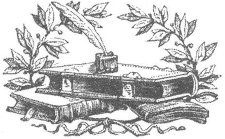

Dinimizin gizemleri, tıpkı hastayken, çiğnenmeden bütün halde yutulan o yararlı haplar gibi iyileştirme etkisine sahiptir; genelde hiçbir etki göstermeden kusulup dışarı atılır.
THOMAS HOBBES
Marx hatalıydı. Din, insanlığın afyonu değildir. Afyon; uyutucu, hissizleştirici, sıkıcı şeyleri akla getiriyor. Ama din, sıklıkla korkunun afrodizyağı, gaddarlığın amfetamini olmuştur. En iyi olduğu durumda ruhları ayağa kaldırmış, çan kuleleri dikmiştir. En kötü olduğu durumdaysa bütün uygarlıkları mezarlığa çevirmiştir.
PHILLIP ADAMS
[Din] İnancın yerine geçen moda söylem.
OSCAR WILDE
Dini tanımlamam gerekseydi, kahrolası şartlar sonucu oluşan bir ruhu korumak için insanın icat ettiği bir sargı bezi olduğunu söylerdim.
THEODORE DREISER
Kilise, dünyanın en büyük kayıp eşya bürosudur.
ROBERT L. SHORT
Din, yoksulların zenginleri öldürmelerini önler.
NAPOLÉON BONAPARTE
Kilisedeki kutsal müzik hepimizi inançlı birer insan yapabilir, ancak vaizler dengeyi sağlayan etmen olarak düşünülmelidir.
MIGNON MCLAUGHLIN
Duygusal taşkınlıklar, insana çay, tütün, afyon, viski ve din aracılığıyla ulaşır.
GEORGE BERNARD SHAW
İnsanlar Tanrı aşkına öylesine aşağılık ve acımasız şeyler yapabiliyorlar ki.
W. SOMERSET MAUGHAM
İnsanlar kötülüğü hiçbir zaman, dini inançları uğruna yaptıkları zamanki kadar eksiksiz ve neşeli yapmazlar.
BLAISE PASCAL
Genel konuşacak olursak, dindeki hatalar tehlikelidir; felsefedeki hatalarsa yalnızca saçma.
DAVID HUME
Eh, İncil'in başında hep bir inkâr metni olması gerektiğini düşündüm: "Bu bir kurmacadır." Yani suyun üstünde yürümek mi? Eh, bu da imanın oyun alanı.
IAN MCKELLEN
Din, fesatları şüphe etmekten korur.
CHRISTOPHER MARLOWE
Şeytan, amacını desteklemek için kutsal kitaplardan alıntı yapabilir.
WILLIAM SHAKESPEARE
Her dogmanın bir zamanı vardır.
ISRAEL ZANGWILL
Birçok vaaz bana sanki birer reklammış gibi geliyor, ama Tanrı'nın sponsor mu, yoksa ürün mü olduğunu bir türlü anlayamıyorum.
MIGNON MCLAUGHLIN
İnsanlığa ait dinler, kitlesel sanrılar içinde sınıflandırılmalıdır. Bu sanrıya sahip kişiler, söylemeye bile gerek yok, böyle bir durum olduğunu fark etmezler bile.
SIGMUND FREUD
İncil, ne bileyim, bence bir hayal kırıklığıdır. İnsanlık için yapması gereken şeyi asla yapmamıştır.
CHRISTOPHER MORLEY
